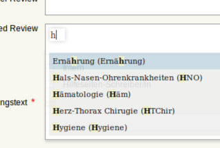
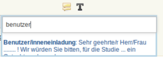

Tools/Features¶
Die Tools/Features dienen dazu, einzelne Arbeitsvorgänge zu verkürzen/vereinfachen.
Autogrowing Field¶
Ein Autogrowing Field ist ein Eingabefeld, das sich bei einem Zeilenumbruch automatisch vergrößert. Dieses Feature haben alle Eingabefelder, bei denen ein längerer Text möglich ist. Die Autogrowing Fields bieten auch die Möglichkeit, durch die Tastenkombination Alt+Return ein bildschirmfüllendes Eingabefeld herzustellen. Dadurch haben Sie beim Schreiben eines längeren Textes eine bessere Übersicht. Geben Sie dieselbe Tastenkombination ein, wenn Sie das bildschirmfüllende Eingabefeld wieder entfernen wollen. Der geschriebene Text erscheint dann automatisch in dem dafür vorgesehenen Eingabefeld.
Autosafe¶
Die Autosafe-Funktion bewirkt ein regelmäßiges Speichern beim Erstellen einer neuen Einreichung oder einer Studienmeldung. Die Speicherung erfolgt alle zwei Minuten automatisch.
Textboxliste¶
Bei der Textboxliste handelt es sich um ein Feld, das bei Eingabe von einem oder mehreren Buchstaben automatisch Vervollständigungen anzeigt. Sie finden die Textboxliste überall dort, wo man aus einer vorgefertigten Liste Elemente auswählen kann.

Wie funktioniert die Auswahl¶
Durch einen Klick auf ein Element der Liste wird dieses ausgewählt. Wählen Sie bei Bedarf mehrere Begriffe nach demselben Prinzip aus. Klicken Sie auf  neben dem Begriff, um ihn wieder zu entfernen.
neben dem Begriff, um ihn wieder zu entfernen.
Die folgende Funktion wird nur bestimmten Gruppen des Systems zur Verfügung gestellt:
Textbausteine¶
Textbausteine ermöglichen Ihnen, einen Text, der häufig gebraucht wird, mit Hilfe eines Kürzels automatisch aufzurufen.
Wo können Sie Textbausteine verwenden¶
Sie können Textbausteine überall dort verwenden, wo Sie vorfinden. Wenn Sie auf dieses Zeichen klicken, erscheint eine Liste mit allen Textbausteinen, die im Menüunterpunkt Textbausteine (unter dem Menüpunkt Verwaltung im Seitenmenü) erstellt werden/worden sind. (Lesen Sie außerdem in der Hilfe-Seite Textbausteine, wie Sie Textbausteine erstellen können.)
Wie können Sie Textbausteine verwenden¶
Sie haben dafür zwei Möglichkeiten:
- Klicken Sie auf das Textbaustein-Zeichen. Dadurch werden Ihnen alle Textbausteine in einer Liste angezeigt. Wählen Sie mit einem Klick den Textbaustein Ihrer Wahl.

Wenn die Liste sehr lang ist, empfielt es sich, in das Eingabefeld, das durch einen Klick auf das Textbaustein-Zeichen erscheint, ein Kürzel des Bausteins einzugeben, um eine direkte Suche zu starten.
- Um direkt im Eingabefeld einen Text einzufügen, geben Sie das dazugehörige Kürzel (oder einen Teil des Kürzels) ein, markieren Sie es und drücken dann die Tastenkombination Alt+M. Der beliebige Text erscheint automatisch im dazugehörigen Eingabefeld.
Erstellung von PDF-Dateien¶
Windows¶
Laden Sie das kostenlose Programm “pdfcreator” unter dem Link http://www.pdfforge.org/pdfcreator herunter und installieren Sie es. “pdfcreator” stellt Ihnen einen Druckertreiber zur Verfügung, der Ihnen erlaubt, alle ausdruckbaren Dokumente als PDF abzuspeichern. Dazu öffnen Sie das Dokument im jeweiligen Bearbeitungsprogramm und klicken Sie auf Drucken. Wählen Sie den virtuellen “pdfcreator”-Drucker in dem darauf erscheinenden Druckdialog um das Dokument als PDF-Datei abzuspeichern. Weitere Informationen und Hilfestellungen (Englisch) zu “pdfcreator” finden Sie unter dem Link http://www.pdfforge.org/content/pdfcreator-user-manual. Beachten Sie, dass Sie mit “pdfcreator” auch PDFA-Dateien erstellen können. Speichern Sie Dokumente als PDFA-Datei ab, wenn Sie sie als Unterlage hochladen wollen.
Mac OS X¶
Unter Mac OS X können Sie über den Druckdialog ohne Drittprogramme PDF-Dateien erstellen. Diese Funktionalität ist ein Bestandteil dieses Betriebssystems.
Linux/BSD/Solaris¶
Bei diesen Sytemen können Sie über einen “CUPS”-Treiber PDF-Dateien erstellen. Diese Funktionalität erreichen Sie über den Druckdialog. Hinweise zur Installation dieses Treibers lesen Sie bitte im Administrationshandbuch Ihres Systems nach. Falls Sie eine Linux-Desktop-Distribution verwenden (z.B. Ubuntu) ist dieser Treiber möglicherweise schon installiert.
Wie installiert man die Rechtschreibüberprüfung im Browser¶
Jeder moderne Webbrowser hat die Möglichkeit, die Rechtschreibung in Eingabefeldern zu überprüfen, falls die Rechtschreibdatenbank für die verwendete Sprache installiert ist. Unter folgenden Links können Sie Wörterbücher für die Rechtschreibprüfung in Ihrem Browser installieren:
Firefox: https://addons.mozilla.org/en-US/firefox/language-tools/
Internet Explorer: http://www.iespell.com/
Safari: eingebaut
Was wird benötigt um die Signierfunktion zu nutzen¶
Es wird eine E-card benötigt die für die Signierung aktiviert wurde. Siehe dazu: www.buergerkarte.at . Speziell zu beachten ist bei Mac OS 10.6 und 10.7 noch die spezielle Java Einstellung. Weitere Information dazu: http://www.buergerkarte.at/mvnforum/mvnforum/viewthread_thread,316